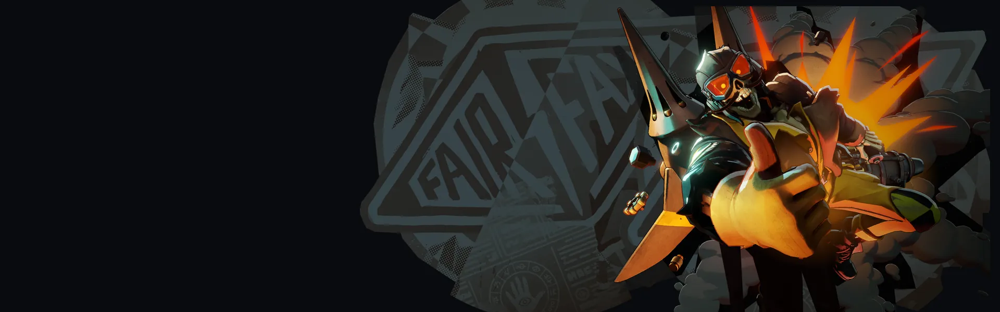

Personagem imprudente e acrobático, com foco em explosivos.
História
"Senhoras e senhores, vou lhes contar um segredo chocante: nas Indústrias Fairfax não sabemos nada sobre segurança. Agora deixem-me contar algo ainda MAIS chocante... isso é uma coisa boa! Agora, em meu mandato aqui, fui baleado, esfaqueado, empalado, defenestrado, explodido, atomizado e decapitado - nem uma vez. nem duas. não três vezes. mas quice. Isso mesmo, minha cabeça foi cortada tantas vezes que eu teve que usar uma palavra inventada para quantificá-lo.
Mas eu me coloquei num inferno figurativo e às vezes literal porque não basta PENSAR em como as coisas dão errado, precisamos SABER como as coisas dão errado.
Agora, a manifestação que vocês estão prestes a testemunhar é extremamente perigosa. Então sente-se. Coloque seus óculos de segurança. E testemunhe o milagre do voo, cortesia das Indústrias Fairfax e do Chimera Mark 1."
- Esta transcrição dos comentários de abertura de Danny na The Military Technology Expo foi fornecida pela Fairfax Industries
História oficial do jogo, traduzida automaticamente para o português.
Números reais
Habilidades
Dispara uma linha de mísseis espirituais que se fincam no chão e explodem após um tempo ou ao detectar um inimigo, marcando-o; um tiro carregado num alvo marcado consome a marca para dano extra e lentidão.
Segure o pulo para voar acumulando calor; no calor máximo, Danny mergulha e explode, ferindo e lançando inimigos, ou se atordoa se não acertar ninguém.
Borrifa combustível que causa dano contínuo e reduz resistência a balas, depois dispara uma rajada espiritual que empurra Danny para trás.
Agarra um inimigo, o ergue e o arremessa; ambos caem sofrendo dano contínuo e o impacto causa dano extra, maior contra inimigos abaixo de 50% de vida.
Builds mais usadas
67.262 partidas registradas com esta build.
Rodadas de alta velocidade (800) · Grão (800) · Rodadas de Abertura (1.600) · Tiro Expresso (3.200) · Emblema do Encantador (1.600) · Espírito Melhorado (1.600) · Caça-tanques (3.200) · Barreira Reativa (1.600) · Healbane (1.600) · Tiro Restaurador (800)
51.039 partidas registradas com esta build.
Rodadas de alta velocidade (800) · Regeneração Extra (800) · Rodadas de Abertura (1.600) · Tiro Expresso (3.200) · Espírito Extra (800) · Explosão Mística (800) · Grão (800) · Barreira Reativa (1.600) · Expansão Mística (800) · Saúde Extra (800)
44.121 partidas registradas com esta build.
Tiro Restaurador (800) · Saúde Extra (800) · Grão (800) · Rodadas de alta velocidade (800) · Espírito Extra (800) · Espírito Melhorado (1.600) · Explosão Mística (800) · Expansão Mística (800) · Triturador resistente a balas (1.600) · Fortaleza (3.200)
Confrontos reais
 Mirage — 53.1% de vitória
Mirage — 53.1% de vitória Sinclair — 53.1% de vitória
Sinclair — 53.1% de vitória Silver — 52.9% de vitória
Silver — 52.9% de vitória Pocket — 52.9% de vitória
Pocket — 52.9% de vitória Shiv — 52.6% de vitória
Shiv — 52.6% de vitória Viscous — 52.5% de vitória
Viscous — 52.5% de vitória
 Graves — 40.6% de vitória
Graves — 40.6% de vitória Kelvin — 40.8% de vitória
Kelvin — 40.8% de vitória Rat King — 41.3% de vitória
Rat King — 41.3% de vitória Paige — 42.1% de vitória
Paige — 42.1% de vitória Baba — 42.6% de vitória
Baba — 42.6% de vitória Seven — 42.8% de vitória
Seven — 42.8% de vitória
Ver a página de counters do Deadman Danny
O que upar primeiro
Nível por nível, na ordem que os jogadores mais usam em partidas de verdade. A porcentagem mostra quantos escolheram aquela habilidade naquele nível.
Melhores duplas
Heróis que mais ganham jogando junto com ele, em partidas reais (pelo menos 1.500 partidas juntos).
- Graves55,8%
 Victor53,8%
Victor53,8%- Rat King53,5%
- Paige52,7%
- Seven51,5%
- Pocket41,0%
- Mirage41,2%
 Solomon41,9%
Solomon41,9%
Rota (lane)
Na rota, cada lado joga em dupla. Estes números são de confrontos reais: a diferença de almas é medida com o jogo já começado, então almas no verde significa que ele costuma estar na frente.
 Ivy — 33,1% de vitória −1.223 almas (169 partidas)
Ivy — 33,1% de vitória −1.223 almas (169 partidas)- Baba — 38,2% de vitória −996 almas (725 partidas)
- Graves — 40,4% de vitória −79 almas (5.619 partidas)
- Seven — 41,2% de vitória −501 almas (2.642 partidas)
- Paige — 41,3% de vitória −41 almas (2.840 partidas)
- Rat King — 42,0% de vitória −831 almas (35.397 partidas)
 Haze — 44,0% de vitória −738 almas (7.857 partidas)
Haze — 44,0% de vitória −738 almas (7.857 partidas) Wraith — 44,4% de vitória −998 almas (2.542 partidas)
Wraith — 44,4% de vitória −998 almas (2.542 partidas)
 Billy — 56,7% de vitória +1.220 almas (520 partidas)
Billy — 56,7% de vitória +1.220 almas (520 partidas) Lady Geist — 55,9% de vitória +883 almas (270 partidas)
Lady Geist — 55,9% de vitória +883 almas (270 partidas)- Shiv — 55,1% de vitória +238 almas (1.979 partidas)